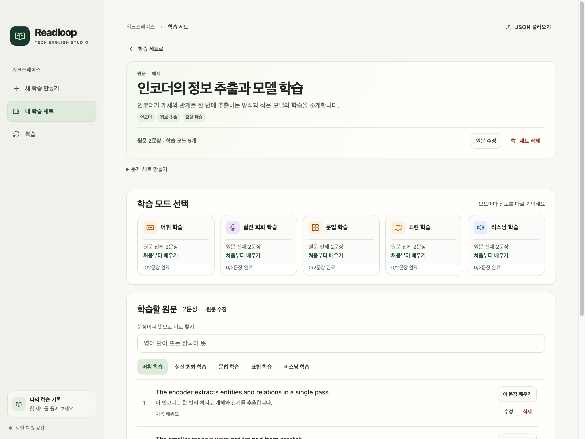
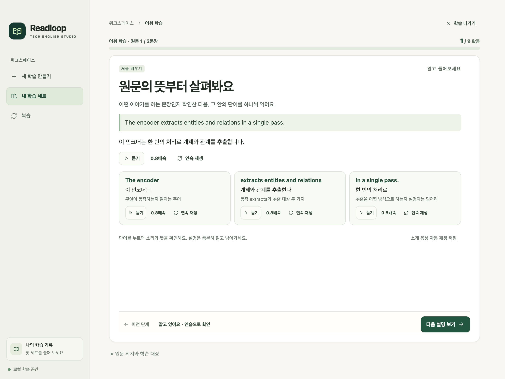

프로젝트 개요
Readloop는 OpenAI의 텍스트·판단·음성 API를 결합해, 직접 고른 영문으로 어휘·실전 회화·문법·표현·리스닝을 연습하는 개인용 데스크톱 앱입니다. AI 모델 소개나 기술 아티클을 읽다가 모르는 단어와 문장 구조를 만났을 때, 번역을 확인한 다음 같은 표현을 직접 써 볼 수 있도록 만들었습니다.
영문을 붙여 넣으면 불필요한 링크와 서식을 정리하고, 원문 전체를 문장별 학습 자료로 바꿉니다. 모드의 목적에 맞춰 단어·표현·문장 구조·소리·대화 상황의 설명과 쉬운 예문부터 살펴본 뒤 빈칸 입력·단어 카드 조립·듣기·말하기로 연습합니다. 다섯 모드는 따로 선택하며, 모드마다 이어서 배울 위치를 기억합니다.

화면은 앱에 포함된 두 문장짜리 예제로 캡처했습니다. 실제 학습에서는 입력한 원문 전체를 각 모드에서 다루며, 문장 목록에서 특정 문장으로 바로 들어갈 수도 있습니다.
다이어그램 원문
flowchart LR
A["영문 정리"] --> B["세트 등록"] --> C["모드 선택"] --> D["상세 자료 준비"] --> E["학습과 복습"]
classDef user fill:#edf5ef,stroke:#82a78d,color:#193d2a;
classDef ai fill:#edf3fc,stroke:#86a4cf,color:#203a65;
classDef saved fill:#fbf3df,stroke:#bda069,color:#594620;
classDef help fill:#fff0e7,stroke:#d59e79,color:#6b3e25;
class A,B,C,E user;
class D ai;
세트에서 모드를 고르면 현재·다음 문장의 상세 자료를 준비하며 학습을 이어 갑니다. 원문 전체의 문제를 한 번에 새로 만드는 작업은 별도 기능입니다. 같은 원문을 모드마다 사용하고 학습·복습 위치는 따로 기억합니다.
개발 배경과 목표
AI 관련 영문을 읽을 때는 전문 용어와 긴 문장 구조가 함께 등장합니다. 번역을 읽으면 내용은 따라갈 수 있어도, 다시 영어 문장만 보았을 때 이해하거나 같은 표현으로 새 문장을 쓰는 일은 별도의 연습이 필요했습니다.
일상적인 예문으로 단어를 익히고 다시 원문으로 돌아오는 흐름을 만들고 싶었습니다. 예를 들어 in a single pass는 글에서는 모델의 처리 방식을 설명하지만, 연습에서는 파일이나 페이지를 한 번에 읽는 짧은 문장에 적용합니다. 큰 덩어리의 뜻을 확인한 뒤 in, a, single, pass가 그 안에서 하는 일도 따로 살펴봅니다.
핵심 목표는 읽을 글을 직접 고르고, 모르는 상태에서 설명을 보며 시작하며, 배운 표현을 다른 문장에서도 떠올리는 것입니다. 실제로 사용하면서 답안 제출, 힌트 접근, 음성 대기, 이전 단계 확인처럼 반복되는 조작도 함께 개선했습니다.
다섯 가지 학습 모드
| 모드 | 학습 내용과 조작 |
|---|---|
| 어휘 | 원문 속 단어의 뜻과 쉬운 예문을 살펴보고 빈칸을 입력합니다. 원문과 새 예문에서 같은 뜻을 다시 떠올립니다. |
| 실전 회화 | 원문의 표현을 짧은 대화 상황에 적용합니다. 상대의 질문을 듣고 답변을 조립한 다음, 말하거나 자신의 답을 입력합니다. |
| 문법 | 문장의 뜻과 뼈대를 확인하고 큰 덩어리부터 연결합니다. 이후 낱말 단위로 조립하고, 주어·부정 등 조건을 바꾼 문장에 적용합니다. |
| 표현 | 함께 쓰이는 표현 전체의 뜻을 익히고 내부 단어를 확인합니다. 일부 빈칸, 원문 속 표현, 다른 상황의 예문으로 연습합니다. |
| 리스닝 | 뜻과 소리를 먼저 연결하고 짧은 구절부터 받아씁니다. 점차 긴 문장과 자막 없는 듣기로 진행합니다. |
다섯 모드를 차례로 완료해야 하는 구조는 아닙니다. 오늘은 어휘를 배우고 다음에는 같은 원문의 리스닝을 선택할 수 있습니다. 각 모드 안에서 설명·연습·변형·복습이 이어지는 구체적인 과정은 학습 흐름과 피드백에 정리했습니다.
다이어그램 원문
flowchart TD
A["원문 전체에서 원하는 모드 선택"] --> V["어휘"]
A --> S["실전 회화"]
A --> G["문법"]
A --> E["표현"]
A --> L["리스닝"]
classDef user fill:#edf5ef,stroke:#82a78d,color:#193d2a;
classDef ai fill:#edf3fc,stroke:#86a4cf,color:#203a65;
classDef saved fill:#fbf3df,stroke:#bda069,color:#594620;
classDef help fill:#fff0e7,stroke:#d59e79,color:#6b3e25;
class A user;
class V,S,G,E,L saved;
다섯 가지는 독립된 진입점입니다. 어휘 다음에 회화를 완료해야 문법을 열 수 있는 방식은 아닙니다.
OpenAI API 활용
Readloop는 Responses·Decisions·Realtime·Audio Transcriptions API를 학습 기능별로 연결한 프로젝트입니다. 원문을 설명과 문제로 바꾸는 작업, 무엇을 먼저 배울지 판단하는 작업, 소리를 만들고 녹음을 이해하는 작업을 각각 해당 API로 처리합니다. 모델 응답은 앱에서 검증하고 학습 화면·입력·음성·복습에 연결합니다.
| 사용한 OpenAI API | 사용한 기능 | 요청과 결과의 연결 |
|---|---|---|
| Responses API | 원문 정리 후보 분류, 제목·요약, 학습 대상 계획, 설명·예문·대화 작성, 언어 검토, 문맥 사전, 회화 의미 평가 | 원문·문맥·작업별 JSON Schema를 보내 정해진 필드의 JSON을 받습니다. 검증한 자료로 다섯 모드의 활동을 구성하고, 사용자의 자유 답변에는 한국어 피드백을 표시합니다. |
| Decisions API | 단어 중요도, 이전 어휘·표현과 같은 뜻·용법인지 판단 | 원문의 후보와 관련 이력을 보내 점수·선택·확률 형태의 판단을 받습니다. 앱의 우선순위 조정과 최종 학습 계획에 참고하며, 보조 판단을 사용할 수 없으면 원문을 읽는 계획 단계로 이어 갑니다. |
| Realtime API | 단어·구절·문장의 영어 음성 생성, 따라 읽은 녹음의 발음 피드백 | WebSocket으로 읽을 텍스트를 보내 음성을 받거나, 목표 문장과 녹음을 함께 보내 이해 가능 정도·확인할 단어·한국어 안내를 받습니다. 생성 음성은 WAV 캐시에 저장해 반복 듣기에 사용합니다. |
| Audio Transcriptions API | 말로 답한 녹음을 영어 답안으로 변환 | 녹음 파일과 영어 인식 설정을 보내 인식한 영문을 받습니다. 정해진 답은 앱이 비교하고, 자유 회화 답변은 Responses API의 의미 평가에 연결합니다. |
다이어그램 원문
flowchart TD
U["원문·단어·답변·녹음"] --> M["Readloop의 API 연결"]
M --> R["Responses API"]
M --> D["Decisions API"]
M --> V["Realtime API"]
M --> T["Audio Transcriptions API"]
R --> RJ["설명·예문·사전·평가 JSON"]
D --> DJ["중요도·문맥 판단"]
V --> VJ["영어 음성·녹음 피드백"]
T --> TJ["인식한 영어 답안"]
classDef app fill:#edf5ef,stroke:#82a78d,color:#193d2a;
classDef ai fill:#edf3fc,stroke:#86a4cf,color:#203a65;
classDef result fill:#fbf3df,stroke:#bda069,color:#594620;
class U,M app;
class R,D,V,T ai;
class RJ,DJ,VJ,TJ result;
현재 하는 활동에 따라 API 요청을 분기합니다. 예를 들어 빈칸 답안을 말하면 Audio Transcriptions API로 영어를 인식한 뒤 앱이 정답을 비교합니다. 배운 문장을 따라 읽는 활동은 Realtime API에 녹음 자체를 보내 발음 피드백을 받습니다. 한 문장의 설명·예문 JSON은 여러 학습 활동에서 재사용하고, 캐시된 음성의 반복 재생은 로컬에서 처리합니다.
실제 엔드포인트, 요청 형식, 사용하는 모델과 호출 모듈은 OpenAI API 요청 구현과 모델별 역할에 정리했습니다. 아래 기능 설명에서는 각 결과가 어떤 화면과 학습으로 이어지는지 보여 줍니다.
AI 기능과 학습 결과
AI는 원문을 정리하고, 무엇을 배울지 고르고, 설명·예문·음성을 만들며, 자유로운 답변에 피드백하는 데 사용합니다. 생성된 자료를 읽고 끝내는 대신, 앱이 그 자료를 입력·조립·듣기·말하기 활동으로 연결합니다.
붙여 넣은 글의 정리와 주제 분류
링크와 굵은 글씨, 이모지, 해시태그가 섞인 글도 붙여 넣을 수 있습니다. 링크 주소와 장식 서식은 코드로 정리하고, 글 끝의 자료 링크·인사·감사 문구처럼 본문인지 애매한 후보는 AI가 줄 단위로 분류합니다. AI에는 제거할 후보 번호만 고르게 하며 원문을 자유롭게 다시 쓰게 하지 않습니다. 기술 설명·수치·불확실성을 담은 줄은 보존하도록 요청합니다.
정리한 영문은 문제 생성 전에 확인할 수 있습니다. 별도의 AI 요청으로 글 전체를 읽고 한국어 주제 제목, 한 문장 요약, 검색용 키워드를 만듭니다. 따라서 여러 글을 등록한 뒤 ‘인코더’, ‘모델 학습’처럼 주제로 찾고, 원문 내용까지 검색해 공부할 글을 고를 수 있습니다.
이 화면은 코드가 처리하는 링크·서식 정리 예제입니다. 본문인지 애매한 글 끝 문구의 AI 분류와는 처리 역할을 구분합니다.
Decisions API를 활용한 학습 대상 선정
Decisions API는 문장별 학습 자료를 만들기 전에 어떤 단어와 표현을 우선 연습할지 판단하는 단계에 연결했습니다. 원문에 나온 모든 단어를 같은 비중의 문제로 만들기보다, 글의 핵심을 이해하는 데 필요한 개념과 아직 어려워하는 표현을 고르기 위해 사용합니다.
처음 배우는 문장의 상세 자료를 준비할 때, 원문 전체의 문제를 새로 만들 때, 문장을 수정해 자료를 다시 만들 때 호출합니다. 준비된 자료로 문제를 풀 때는 그 자료를 재사용합니다. 판단할 내용은 원문 전체의 맥락, 현재 문장, 어휘·표현 후보와 관련 학습 이력입니다. 이력에는 이전 문장과 뜻, 오답·도움 사용·혼자 맞힌 기록과 복습 예정 시점이 포함됩니다.
| 판단할 내용 | 어떤 경우에 사용하는지 | 학습 대상 선정에 반영하는 방법 |
|---|---|---|
| 문장 속 중요도 | 후보가 핵심 동사·개념인지, 보조 단어인지, 회사명·숫자처럼 별도 어휘 문제에 덜 적합한지 구분할 때 | 단어의 희귀함보다 현재 문장을 이해하는 데 중요한지를 우선순위에 반영합니다. |
| 이전 학습과 같은 뜻·용법인지 | 같은 철자의 단어나 활용형을 배운 기록이 있을 때 | 이전 문장과 한국어 뜻까지 비교해 같은 용법으로 확인된 기록에만 이력 조정을 적용합니다. |
| 표현의 이전 쓰임과 같은지 | 같은 여러 단어 표현을 연습한 기록이 있을 때 | 이전 뜻과 현재 쓰임을 비교한 뒤 반복 연습과 복습의 우선순위를 조정할 수 있도록 합니다. |
중요도와 문맥 관계는 Decisions API가 판단하고, 학습 기록에 따른 우선순위 조정은 앱이 처리합니다. 같은 뜻으로 확인된 표현을 아직 어려워하거나 복습할 때가 되었다면 다시 연습하는 쪽으로 높입니다. 다른 예문에서도 혼자 기억했고 다음 복습 시점이 남아 있다면 새 표현에 우선순위를 양보하도록 낮춥니다. 단어장에 담거나 사전을 찾아본 기록은 관심의 근거로 참고하며, 외웠다는 증거로 쓰지 않습니다.
예제 문장 The encoder extracts entities and relations in a single pass.에 확인용 후보 목록과 학습 이력을 따로 구성해 API를 직접 호출했습니다. 아래는 판단 역할을 확인하기 위한 통제 실행의 결과입니다. 실제 사용자 학습 기록이나 앱의 자동 후보 목록을 그대로 사용한 사례는 아닙니다.
| 후보 | 실제 확인한 판단과 처리 |
|---|---|
| pass | ‘시험에 합격하다’를 배운 기록과 현재 ‘한 차례의 처리’는 새로운 뜻으로 판단했습니다. 철자가 같아도 이미 아는 표현으로 처리하지 않았습니다. |
| encoder | 같은 이력 항목을 골랐지만 확신이 충분하지 않아, 이미 기억했다는 기록으로 우선순위를 낮추지 않았습니다. |
| in a single pass | 이전 기록과 같은 뜻으로 판단했습니다. 혼자 변형까지 풀었고 복습 시점이 남아 있는 예제 이력이므로, 반복 우선순위를 낮추는 정보를 다음 학습 계획에 전달했습니다. |
이 결과를 바탕으로 Responses API의 학습 계획 단계가 원문을 다시 읽고 최종 대상과 이유를 정합니다. 중요한 개념은 최근에 배웠어도 필요한 연습으로 남길 수 있으며, 우선순위가 낮아져도 원문 전체와 모든 낱말의 설명은 유지합니다. Decisions API를 사용할 수 없거나 뜻 판단이 불확실하면 기존 숙달 기록으로 후보를 임의로 제외하지 않고 원문 중심의 계획을 이어 갑니다.
다이어그램 원문
flowchart TD
A["원문·후보·관련 학습 이력"] --> B["Decisions API: 중요도·같은 뜻·표현 판단"]
B --> C["앱: 이력에 따른 우선순위 조정"]
C --> D["Responses API: 최종 학습 계획"]
D --> E["설명·예문·모드별 활동 준비"]
classDef app fill:#edf5ef,stroke:#82a78d,color:#193d2a;
classDef ai fill:#edf3fc,stroke:#86a4cf,color:#203a65;
classDef result fill:#fbf3df,stroke:#bda069,color:#594620;
class A,C app;
class B,D ai;
class E result;
한국어 설명과 다섯 모드의 예문 생성
문장별로 번역, 의미 덩어리, 낱말의 문맥 뜻과 역할을 만듭니다. 단어를 사전 뜻대로 나열하는 데서 그치지 않고, has to leave에서는 has to가 의무를 나타내며 leave와 어떻게 이어지는지 설명하도록 합니다. 문장의 주어와 동작, 수식 관계를 처음 배우는 사람이 따라갈 수 있는 한국어로 풀어 줍니다.
같은 자료 안에 어휘의 쉬운 예문과 새 예문, 문법의 기본 예문과 변형, 표현을 쓰는 두 상황, 짧은 대화의 질문·답변·후속 질문도 생성합니다. 예제의 in a single pass는 원문 읽기에서 그치지 않고 It checks the file in a single pass.를 조립하거나 말하는 데 사용할 수 있습니다. 앱은 이 자료로 각 모드의 활동을 구성하므로 한 문장을 뜻·어순·소리·사용 상황에서 반복해 만납니다.

원문의 단어를 누르면 문장 속 역할을 보고, 더 필요할 때 문맥 사전으로 이동합니다.
문맥 사전과 개인 단어장
원문과 원문 구절의 단어를 누르면 준비된 뜻·역할과 소리를 확인합니다. 별도 예문에서 준비된 낱말 설명이 없는 경우에는 문맥 사전으로 더 알아볼 수 있습니다. AI 사전에 해당 단어와 현재 문장을 함께 보내면, 사전 패널에서 이 문장의 뜻과 설명, 기본형·활용형, 번역이 붙은 예문을 확인하고 필요한 항목을 개인 단어장에 저장할 수 있습니다.
예를 들어 pass는 통과나 합격의 뜻만 찾으면 처리 방식을 설명한 원문과 연결하기 어렵습니다. 문맥을 함께 보내 이 문장의 한 차례 처리라는 뜻을 확인하고, 그 뜻을 원문과 함께 단어장에 담을 수 있습니다. 저장된 사전 결과는 다시 열 때 재사용합니다.

문맥 사전의 뜻·설명·예문 일부입니다. 이 화면은 예제 문장에서 실제 API에 조회한 결과를 표시했습니다.
단어·구절·문장의 영어 음성 생성
텍스트로 만든 예문과 원문을 OpenAI Realtime 음성 모델로 읽습니다. 처음 배우기에서 설명을 보면서 듣고, 단어를 누를 때 해당 소리를 확인하고, 카드를 조립한 뒤 완성 문장을 들을 수 있습니다. 구절만 반복하거나 0.8배속으로 들으며 소리와 철자를 연결하는 연습도 가능합니다.
단어를 분리해 읽을 때도 원문 속 발음을 고려합니다. 관사 a가 문장 안에서 약하게 발음되는 경우에는 문맥을 반영하고, 해당 소리는 미리 준비한 음성도 재사용합니다. 생성 음성을 캐시하고 다음 활동의 소리를 미리 준비하므로 반복 듣기마다 새 요청을 기다릴 필요가 줄어듭니다.
마이크 입력의 전사와 녹음 발음 피드백
말로 답하기는 OpenAI Audio Transcriptions API의 gpt-transcribe 모델로 녹음을 영어 텍스트로 바꿉니다. 마이크로 말한 내용을 녹음해 영어로 인식하도록 보내면, 인식된 영문을 현재 빈칸이나 회화 답변에 채우고 자동으로 확인합니다.
다이어그램 원문
flowchart TD
A["마이크로 말하기"] --> B["목소리 녹음"]
B --> D["Audio Transcriptions API · gpt-transcribe"]
D --> E["인식한 영문을 답안에 반영"]
E --> F["정해진 답은 앱에서 비교"]
E --> G["자유 답변은 Responses API로 의미 평가"]
classDef app fill:#edf5ef,stroke:#82a78d,color:#193d2a;
classDef ai fill:#edf3fc,stroke:#86a4cf,color:#203a65;
class A,B,E,F app;
class D,G ai;
정해진 답은 앱이 비교하고, 자유 회화 답변은 인식된 텍스트를 Responses API의 의미 평가로 넘깁니다. 인식이 잘못된 경우 다시 녹음하거나 답을 수정해 재시도할 수 있습니다. 수정한 답은 원래 인식한 결과와 구분해 기록하며, 키보드로 고친 텍스트를 발음 평가로 사용하지 않습니다.
정해진 문장을 따라 말하는 활동은 녹음 자체와 목표 문장을 음성 모델에 함께 보내 이해 가능한 정도와 다시 연습할 단어 위치를 받습니다. 화면에는 들린 내용, 한국어 피드백, 확인할 단어를 표시합니다. 그 단어를 다시 듣고 자신의 녹음도 재생하며 연습할 수 있습니다. 이 피드백은 악센트가 원어민과 같은지를 재는 점수가 아니라, 녹음이 얼마나 알아듣기 쉬운지에 대한 모델의 판단입니다.
다양한 회화 답변의 의미 평가
자유 답변은 모범 답안과 글자가 같은지만 비교하지 않습니다. AI에 상대의 질문, 전달하려는 뜻, 예시 답변과 실제 답을 함께 보내 질문에 맞게 의미를 전달했는지 확인합니다. 자연스러운 바꿔 말하기, 축약형과 짧은 응답도 허용하도록 요청합니다.
틀리거나 어색한 부분이 있으면 실제 답에서 해당 표현을 짚고, 이유와 고친 예를 한국어로 설명합니다. 사용자는 예문을 그대로 외우는 연습에서 자신의 상황으로 답을 만드는 연습까지 진행할 수 있습니다. 이 텍스트 의미 평가는 녹음 발음 평가와 별도로 처리합니다.
현재 코드의 의미 평가 경로로 두 답안을 실제 요청해 확인한 결과는 다음과 같습니다. 질문은 How does your program work?, 전달할 뜻은 ‘그것은 한 번의 처리로 파일을 확인해요’로 같게 두었습니다.
| 직접 입력한 답 | 해당 실행의 판정 | 실제 피드백의 요지 |
|---|---|---|
| It checks the file in one pass. | 정답 | one pass도 single pass처럼 자연스럽고 같은 뜻을 전달한다고 설명했습니다. |
| It check the file in a single pass. | 조금 달라요 | 뜻은 전달되지만 주어 It에 맞춰 check를 checks로 고치도록 설명했습니다. |
이 사례는 실행 당시 받은 결과이며, 같은 입력의 모델 응답 문구는 달라질 수 있습니다. 정확히 같은 문장을 완성하는 빈칸 문제와, 의미가 맞는 여러 답을 허용하는 회화 문제의 기준도 구분합니다.

직접 입력한 답변을 실제 API에 평가받은 화면입니다. 뜻은 전달되지만 It에 맞춰 checks로 고치도록 안내합니다. 녹음 발음 평가 화면과는 구분합니다.
생성 자료의 별도 언어 검토
설명과 예문을 만든 뒤에는 다른 모델의 검토 단계에서 뜻·번역·문법과 문맥을 다시 확인합니다. 예문을 쉽게 만들다가 기술 용어의 뜻이 바뀌거나, 단수 주어에 맞지 않는 동사를 붙이거나, 비교 대상이 달라진 경우를 줄이기 위한 단계입니다. 검토로 고친 자료도 원문 일치와 형식 검사를 다시 통과해야 저장합니다.
사용자는 검증된 자료에서 단어별 입력과 카드 조립, 단계별 힌트, 다른 예문 복습을 진행합니다. 이 입력 조작·정답 비교·힌트 표시·복습 일정은 앱이 관리하고, 매번 새로운 AI 응답을 받아야만 진행하는 구조로 만들지 않았습니다.
처음 배우기와 입력 피드백
처음 배우기에서는 모드에 맞는 설명과 예문부터 살펴봅니다. 아래 어휘 모드의 원문 소개 화면에서는 번역, 덩어리별 뜻과 역할을 함께 보여 줍니다. 원문·구절을 듣거나 단어를 눌러 소리와 뜻을 확인할 수 있습니다. 이미 아는 내용은 연습으로 넘어가고, 다시 보고 싶으면 이전 단계로 돌아갑니다.

정답이 정해진 타자 문제는 문장 속 단어별 밑줄에 직접 입력합니다. 정답을 완성하면 자동으로 확인하고, 다른 답을 확인하려면 Enter를 누릅니다. 카드 문제는 누른 순서대로 조립하며, 입력한 어순을 앱이 임의로 고치지 않습니다.
오답은 확인할 단어의 밑줄과 피드백으로 표시합니다. 여러 번 막히면 해당 위치에 힌트 말풍선이 자동으로 나타납니다. 뜻·철자 단서에서 시작해 선택지와 답 보며 배우기로 도움을 늘립니다. 도움받아 맞힌 내용은 대체 예문이 있으면 그 예문에서 다시 연습하고, 없는 활동은 같은 문제를 다시 확인합니다. 단순 재시도를 다른 문맥에서 기억한 증거로 처리하지는 않습니다.

별도 답안 창을 두지 않고 문장 속 밑줄에 단어를 입력합니다. 다음 설명과 정답 피드백 화면은 학습 흐름 문서에서 이어 볼 수 있습니다.
음성과 원문 관리
같은 재생 버튼에서 듣기와 정지를 전환하고, 0.8배속과 연속 재생을 선택할 수 있습니다. 다음 단계로 이동하면 이전 반복 재생은 멈춥니다.
학습 세트는 글의 주제로 제목을 만들고 원문 내용으로도 검색합니다. 같은 원문을 다시 넣으면 기존 세트로 이동합니다. 원문에 번호나 영상 시간이 섞였다면 등록 후 문장을 수정하거나 삭제할 수 있고, 바뀐 문장의 학습 자료만 다시 만듭니다. 세트 삭제와 학습 JSON 백업·복원도 제공합니다.

예제의 주제 제목과 요약, 원문 미리보기로 공부할 글을 찾습니다. 개인 학습 목록은 사용하지 않았습니다.
구현 구조
Electron의 화면은 바닐라 JavaScript로 만들고, 메인 프로세스가 OpenAI API 요청과 파일 저장을 담당합니다. AI가 만든 문장별 설명·예문 JSON을 검증한 뒤, 앱이 원문 단어를 기준으로 빈칸과 조립 문제를 구성합니다. 원문 전체의 자료 생성은 제한된 수의 요청을 병렬로 실행하고, 음성도 사용자 재생 요청을 우선하는 별도 대기열에서 준비합니다.
학습 기록은 로컬에 저장합니다. 핵심 단어를 고를 때 이전 오답·도움 사용·독립적인 정답·복습 시점을 참고하되, 같은 철자라도 다른 뜻으로 쓰였다면 새 문맥으로 다룹니다. 생성과 검증, 음성 캐시, 원문 수정 시 기록을 유지하는 방식은 문제 생성과 앱 구조에서 설명합니다.